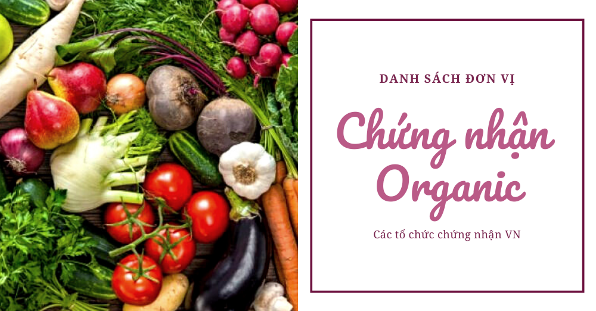

Tư vấn & chứng nhận chuyên nghiệp
Chứng nhận hữu cơ — đáp ứng chuẩn quốc tế và yêu cầu xuất khẩu.
Apoliq tư vấn chứng nhận Organic (hữu cơ) cho nông sản và thực phẩm, theo tiêu chuẩn quốc tế và quy định Việt Nam.
Xác thực năng lực: Hồ sơ năng lực ISO/IEC 17025 · Hotline 0917 333 965
Đáp ứng điều kiện vào chuỗi cung ứng, siêu thị, xuất khẩu.
Tư vấn lộ trình, hồ sơ và chi phí dự kiến.
Hỗ trợ giám sát, tái chứng nhận đúng hạn.
Đồng hành xây dựng hệ thống và đào tạo.
Chứng nhận hữu cơ (Organic) là quá trình đánh giá và xác nhận sản phẩm được sản xuất theo phương pháp hữu cơ, không sử dụng hóa chất tổng hợp, phân bón hóa học, thuốc trừ sâu, hormone tăng trưởng, biến đổi gen và các chất phụ gia nhân tạo.
Tại Apoliq, chúng tôi cung cấp dịch vụ chứng nhận hữu cơ theo các tiêu chuẩn quốc tế như USDA Organic, EU Organic, JAS, IFOAM và tiêu chuẩn hữu cơ Việt Nam (TCVN 11041-1:2017). Chúng tôi hỗ trợ doanh nghiệp trong toàn bộ quá trình từ tư vấn, đánh giá đến cấp chứng nhận, giúp nâng cao giá trị sản phẩm và khả năng cạnh tranh trên thị trường.
Gọi hotline hoặc gửi form — nhận báo giá và lịch hỗ trợ dự kiến.
Liên hệ: 0917 333 965
Gửi thông tin — phản hồi trong giờ hành chính
Phương pháp canh tác hữu cơ giúp bảo vệ đất, nước và đa dạng sinh học.
Sản phẩm hữu cơ không chứa dư lượng hóa chất, thuốc trừ sâu và hormone tăng trưởng.
Sản phẩm được chứng nhận hữu cơ có giá trị cao hơn và được người tiêu dùng tin tưởng.
Mở rộng cơ hội tiếp cận thị trường quốc tế và đáp ứng nhu cầu ngày càng tăng về sản phẩm hữu cơ.
Cải thiện điều kiện làm việc và sức khỏe cho người sản xuất và cộng đồng địa phương.
Hệ thống truy xuất nguồn gốc rõ ràng từ sản xuất đến người tiêu dùng.
Tư vấn về tiêu chuẩn hữu cơ phù hợp và hỗ trợ hoàn thiện hồ sơ đăng ký.
Hỗ trợ trong quá trình chuyển đổi từ canh tác thông thường sang canh tác hữu cơ và đào tạo nhân sự.
Thực hiện kiểm tra nội bộ để đánh giá mức độ tuân thủ tiêu chuẩn hữu cơ.
Tiến hành đánh giá chính thức tại cơ sở sản xuất bởi đoàn đánh giá độc lập.
Lấy mẫu đất, nước, sản phẩm để phân tích và đảm bảo không có dư lượng hóa chất.
Sau khi đáp ứng đầy đủ các yêu cầu, cơ sở sẽ được cấp chứng nhận hữu cơ.
Thực hiện đánh giá giám sát định kỳ hàng năm để duy trì hiệu lực của chứng nhận.
Đội ngũ chuyên gia có nhiều năm kinh nghiệm trong lĩnh vực chứng nhận hữu cơ.
Chứng nhận được công nhận bởi các tổ chức quốc tế và được chấp nhận tại nhiều thị trường.
Cung cấp hỗ trợ từ giai đoạn đăng ký đến quá trình duy trì chứng nhận.
Quy trình đánh giá rõ ràng, minh bạch và tuân thủ nghiêm ngặt các tiêu chuẩn quốc tế.
Cung cấp dịch vụ chuyên nghiệp với mức chi phí hợp lý và cạnh tranh.
Phụ thuộc quy mô và mức độ sẵn sàng — thường vài tuần đến vài tháng.
Tư vấn, đánh giá, cấp chứng nhận — báo giá rõ từng hạng mục trước khi triển khai.
Hồ sơ cơ sở, quy trình sản xuất — chúng tôi hướng dẫn checklist cụ thể.
Gọi hoặc nhắn Zalo — mô tả quy mô doanh nghiệp và thời gian cần triển khai.